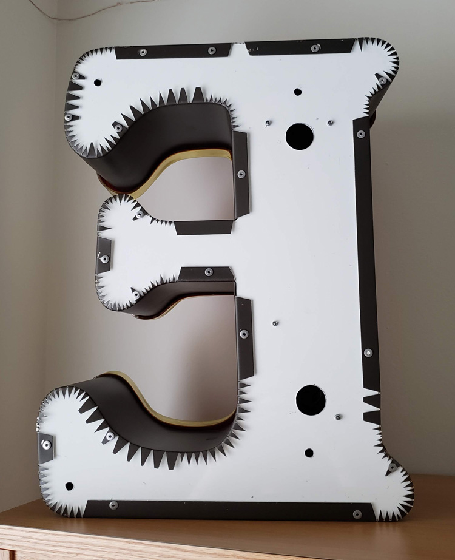

texts
“If a new type doesn’t show your own convictions, what is the point of doing all that work?”
— Gunnlaugur SE Briem
“It is now easier for us to imagine the end of the world than an alternative to capitalism.”
— Dunne & Raby, Speculative Everything
Do You Want Typography or Do You Want The Truth? — Erik Carter:
How can we increase knowledge consumption without conflating material consumption? Can you be effective while ignoring “the market”?
Working within the system vs. working in direct opposition to the system vs. creating a new system :: following the rules vs. breaking the rules vs. making the rules.

The Internet Does Not Exist (a collection of e-flux essays): The internet is 100% man-made. There is no nature. What are we constructing in this “endless” space? How much more trash are we creating? What’s being destroyed or abandoned? Do these vacancies matter? Is constantly moving to new locations disruptive? Are text-based communities real?
The internet does not exist separately. It is part of life; it cannot be ignored. It is an extension of man. The Internet with capital I does not exist. Only things exist on the thing we refer to as the internet: the seemingly boundless world inside boxed machines. But the internet is still bounded by country, language, culture, government—the same things that bound the physical world.
The world and “internet” are the same entity. The world has just expanded into another dimension.
“the internet is a tool, a tactic, and a territory”
— Media Manipulation Initiative (MMI)
The internet enables alternate realities that make their way into the whole reality.

“Disturbingly commonplace”
Statement & Counter-Statement: Notes on Experimental Jetset: A lot of quotes and questions pulled from this… Experimental Jetset represents what it means to speak a language and adhere to an ideology. They also consider all work personal; the dichotomy of client work and personal work does not exist for them. They’re also willing to try writing and expressing opinion, even if it doesn’t come out quite right.

Modern Typography — Robin Kinross: Thoughts prompted by pages 10–11: Typographic scholarship is largely motivated by the intent to reproduce and sell typefaces modeled on old ones. Do type designers dig deeper than aesthetics?
What ideologies are we reintroducing, repackaging, reiterating… There’s fun facts, but what about context? Why was the original created in the first place? Does it matter since the connotations of a typeface change based on how they’re used? Do the ideologies of the original designer matter to the contemporary designer? Are contemporary process writings another form of marketing and persuasion?
But does scholarship need to be heightened to make typefaces successful in the market? Nope. And to some, selling is the priority… Can you blame them, considering the speed of society and the long-term process of type design? Are the stakes that high? What are the effects of type on culture, content reception, etc.?
It’s not only about legibility but also about communication and tone. Are the visual qualities of a typeface an argument on their own? An additional voice? Or a characteristic of the whole?
The tricky thing is, the use of a type is not controlled by its designer. Its context is variable. So is an ideology in a face even possible if its use is so varied? What does “authorship” mean in type design?
Modern Typography — Robin Kinross: Thoughts prompted by Chapter 2: Enlightenment Origins
“Modern typography exhibits a rational impulse, both internally in ordering its own working, and externally in the face it presents to the world.”
— pg. 16
“By a typographer, I do not mean a printer, as he is vulgarly accounted, any more than Dr Dee means a carpenter or mason to be an architect: but by a typographer, I mean such a one, who by his own judgement, from solid reasoning within himself, can either perform, or direct others to perform from the beginning to the end, all the handy-works and physical operations relating to typographie.” (Joseph Moxon, Mechanik exercises: or the doctrine of handy-works applied to the art of printing, quoted by Kinross pg. 15).
A typographer is as much as a practitioner as a reasoner, and these things can be taught. Typography is based in reason and rational thought, but it is not a science.
— romain du roi italic

Romain du roi introduced units for different body sizes and using the grid. It represents the move toward rationalization and order, and anticipates pixels and how fonts are constructed today (a fine grid of points).
A possibly incorrect assumption of mine: Italics are rooted in handwriting, so what happens when you try to apply that to a grid? An effect of rectilinear units and coordinates is that it leads to sloped romans instead of true italics, which precedes the oblique styles of sans serifs.
Chapter 3: The Nineteenth-Century Complex: Printing was full of working-class labor, roots of underserved, arduous workers:
“They quit, they cheated on their ‘voyage’; they collected small advances on the next week’s work (‘salé’) and then disappeared; and sometimes they spied for rival publishers or the police.” (p.27, Kinross quoting historian of book production in 18th century France). A reminder that things were way more intense back then.
Hard labor motivated workers to take shortcuts to make the work easier, not dissimilar to type designers today using programming and scripting to automate tedious and repetitive processes. Some say it allows more time to be allotted toward designing instead of pixel pushing.
Chapter 4: Reaction and Rebellion:
“The idea of freedom (‘as having skilled and unaffected boldness’) was essential to [Edward Johnston], as was that of constraint: ‘True spontaneity, however, seems to come from working by rule, but not being bound by it’…‘Set no limit to your hopes (which may contemplate Eternity) but every limit of the moment to your work’”
— pg. 39
Finished reading Modern Typography but it’s gonna need a second read eventually.
Chapter 6: New traditionalism:
Revivals were a thing because of consumer demand. What do people want now?
Rudolf von Larisch emphasized the importance of spacing over “the subordination of detail to the total effect” (p.76). I can get too finicky with type (as it’s easy to do) too early on. Just like graphic design, you need to start with the lower-fidelity, overall impression of a design before ironing out all the details. Otherwise it gets overwhelming and limiting. It’s also easy to fall into making showy glyphs that don’t quite work with the whole system.
A prevailing philosophy in type design: “writing or (more generally) hand-produced forms should be at the root of all letters for printing. To ignore written forms, as the ‘elemental’ or new typographers tried to do, was thus to discard the very foundations of civilized practice” (F.H. Ehmcke, pg. 77). What’s the relationship of the hand to how letters are made today? It’s at least half-digitally native now for typefaces, so… As long as it is identifiable as an alphabet, it is ‘legible’, as least legible in context. Individual letters may be hard to read, but you can tell when something is a letter, or when something looks like a letter. It’s so odd — letters are completely abstract things but are material representations of phonemes. Oof. Yeah it all started with the pen, but it doesn’t end that way. And it doesn’t have to start with the pen. What really defines an alphabet is the modular system. Repetition and permutation. Letters can be reduced to binary systems, like my CSS typefaces. It stops looking like an alphabet when none of the forms relate to each other. And form in stroke is not the only way to reference the roots of letterform. The alphabet is the alphabet, connecting points and lines. That’s what a stroke is now; not a gesture but a plotting of points.
Chapter 8: New typography:
Those who reject technological advancement are just denying the inevitable. Technology will make its way into everything and affect it; may as well attempt to steer the wheel.
El Lissitzky: “The printed surface transcends space and time. The printed surface, the infinity of books, must be transcended. The electro-library.” (pg.87, originally from “Topografphie der Typographie”). Still not sure what the electro-library is, but maybe it alludes to how text is read has changed. I am also keen on the idea of how type, the material, allows ideas to exist, to be transferred, to be heard, and to persist after its author has passed.
Jan Tschichold: “An extraordinary economy could be achieved through the exclusive use of small letters — the elimination of all capital letters… our script loses nothing through writing in small letters only — but becomes, rather, more legible, easier to learn, essentially more economical. for one sound, for example ‘a’, why two signs: A and a? one sound, one sign. why two alfabets for one word, why double the quantity of signs when half achieves the same?” (pg.88, originally from Elemental Typography). Another reason why the universal alphabet was attempted. Not sure how I feel about the simplification of alphabets either, but Tschichold has a point. I think it all just falls back on applying such an idea to an appropriate context.
Herbert Bayer: “to print a hand-produced letterform with a machine is false romanticism” (p.93, originally from his presentation Versuch einer neuen Schrift). Maybe this is why script typefaces kind of generally irk me.
Chapter 9: Emigration of the modern
H.N. Werkman was a typographer who did “experiments of configuration and of technique, in alliance with subversive content, suggested ‘an aesthetics of resistance’ [(pg.103)] … was shot by German military authorities who, it has been suggested, were provoked by his unorthodox typography” (pg.104). This was during Nazism. Again, stakes were high back then. Jeez.
Tschichold’s criticism of Germany’s new typography: “It seems to me no accident that this typography was practised almost exclusively in Germany and hardly found acceptance in other countries. In particular, its intolerant attitude corresponds to the German inclination to the absolute, its military will to order and claim to sole domination correspond to those terrible components of the German character that unleashed the rule of Hitler and the Second World War.” (said right after the war). “…aesthetic fetish out of efficiency and machine-production … For the worker, machine production has thus meant a heavy, almost deadly loss in the value of experience, and it is entirely wrong to put it on a pedestal… since we are unable to manage without machine production, we must accept its products simply as facts, without worshipping them on account of their origins” (p.108, originally from ‘Glaube und Wirklichkeit’, p.235). Considering the politics of aesthetics and the implications of imitating the form of an era while ignoring its social/political/etc. context.
Stephen Nixon came to WashU to give a little talk last Friday.
His point was basically:
Be a human.
It was pretty neat getting to chat with a recent graduate of the Type Media program. Coincidentally he wrote the Drawbot notes that I followed earlier in the year. Designers are cool and helpful. Plus he made a sick blackletter font out of pizza emojis. What a dude.
Again I wonder how I ended up at WashU, and then somehow the Type & Letterform class, and then somehow the design program, and—
Education is a huge privilege.
It’s “easy” to work hard when you like what you’re doing. I get lost when I follow the herd, but when I follow the work, it all makes sense. It’s all traceable, and it’s all honest.
So yeah keep making stuff that you’re inclined to make. And believe in something.

— scanimation birthday card; undoubtedly inspired some of my scroll charettes
Good ol’ Jim came to St. Louis and gave a talk / exhibited Type Hike at UMSL.
I learned about kopimism. Again questioning what the internet has done to religion.
To the main point: Jim talked about how Squarespace and Instagram made Type Hike possible due the short timeframe they had to make it and the amount of manpower they had (2 people). This was a perspective that I was sort of looking for. I kind of have a bias against quickly constructing templated sites and the amount of promotion on social media. But that’s just me and my purposes. If Squarespace and Instagram can support nonprofits making cool things and connecting people, why fight it. It’s all about how they’re used (mind the motivations of most of the users people). It kind of goes back to creating alternate systems instead of fighting against a system that wasn’t designed for your purposes anyway.
I am also put to sleep by elongated discussions on branding for the most part, so Jim’s talk on experimental processes and being an independent designer was nice. Most commercial design caters to safe, unprovocative design. If you don’t want to do that, then change your environment. Design is what you choose it to be, if you’re willing to accept the compromises. People have trouble with the demands of commercial design and the urge for personal expression and experimentation. They get trapped in the system. Jim went to grad school after getting sick of making “visual garbage” at a design firm and then just started building his practice after that. Easier said than done. But the point is to go for it. Maybe you’ll get lucky.
Don’t dawdle.
I wish he talked more about being an educator, so I asked him how teaching affects his practice. He said that it keeps him honest since you should practice what you preach, that it makes sure he doesn’t remain complacent, and that he’s always exposed to new ideas. I also wonder if it’s a kind of antidote to doing commercial work. Which I am at theoretical odds with.
Biggest takeaway from the dude is to be a supportive human.
10,000 Original Copies: Kris Sowersby argues that every interpretation of a preceding typeface is an iteration upon an idea that moves it forward and situates it in today’s world. Type design is a gradual improvement, moving at the pace of culture and the market. Originality is a false goal. New technologies expand the possible uses of a typeface, but the forms themselves are simply shapes. How is authorship present in type design? What makes a typeface more than a forgery? How is it different from Mona Lisa duplicates?
Typefaces aren’t merely facsimiles: well-done ones reflect the designer’s ideologies, their knowledge of history, and their craftsmanship.
“Remember. Growth is only possible as a product of history. Without memory, innovation is merely novelty. History gives growth a direction. But a memory is never perfect. Every memory is a degraded or composite image of a previous moment or event. That’s what makes us aware of its quality as a past and not a present. It means that every memory is new, a partial construct different from its source, and, as such, a potential for growth itself.”
— Bruce Mau, An Incomplete Manifesto for Growth
Microinteractions as frictionless experiences designed around practicality but also emotion: the infinite scroll, the pop of a red heart, the chime of a notification, the unintimidating 280 characters. These microinteractions are designed at the line between tolerable and pleasurable, a seemingly neutral experience with the minimal amount of enjoyment. Blunted.
Microinteractions triggering other microinteractions like a tweet
Invisible and seamless microinteractions possibly means gradual erosion of choice and assimilation to screen-based norms. But the repeating friction from new interactions incites online rage. A happy reaction to a microinteraction is a “neutral” one. Passive?

The Gutenberg Galaxy: The Making of Typographic Man — Marshall McCluhan
“By the same process whereby he spins language out of his own being, he ensnares himself in it; and each language draws a magic circle round the people to which it belongs, a circle from which there is no escape save by stepping out of it into another.”
— Wilhelm von Humboldt
Learning different languages—linguistic, visual, etc.—enables comparison to one’s defaults (more perspective).
“By the meaningless sign linked to the meaningless sound we have built the shape and meaning of Western man.”
— Marshall McCluhan
The alphabet is completely abstract, yet it’s the reason why anything is possible at all.
How to Say “Crunch” in Portuguese — Rob Stenson : OH no Type Co. interviews an audio software developer and programmer.
The e in Eames Century Modern by Erik van Blokland: no definitive right and wrong, just convention and context.
PEOPLE music gathering and website: “Music is for everyone.” A non-hierarchical, non-commercial digital space for artists (mostly musicians) to upload and update unfinished work. Includes some background information on when and where the pieces started.
Note the language: people instead of solo artists, projects instead of bands—reflects the in-progress work (or past sketches) but also the ideology of PEOPLE.
Also note the typography: monospace and all caps of PEOPLE representing equality.
The gathering itself is unscheduled and spontaneous “performances” consist of in-progress work developed during the gathering.
More insight in TCI interviews:
“You look at our capitalist society and people who are so enthralled with themselves and their own stories because they’re afraid to die. They’re afraid to stop expanding … You don’t need to expand, you don’t need to become Walmart.”
— Bon Iver
St. Vincent Is the 21st Century’s Guitar Vanguard — Sasha Geffen (NPR):
“Thinking of [the] guitar as a peer and not a tool.”
Coincides with the thought of using code as a language, a form of thinking and communicating and not just a tool rather for efficiency. Not only using the computer, but collaborating with it. Specifying code even more, what can you do in browser that you can’t do in Python? Or, how can browser restrictions influence a design?
“Forget the glass ceiling. Inside a St. Vincent song, you don’t even know where the floor is.” Unexpected, poetic moments vs. novel animations.
“We had been standardized. We were all speaking a different language now. It was the language of Facebook—of computers.”
“How Facebook Has Flattened Human Communication” — David Auerbach: In environments where the visual representation of our words is homogeneously predetermined, how powerful is it to spend time crafting individual letters that work together for legible harmony (or deliberately illegible disharmony) but that also reflect the content in a different voice? How powerful is it to slow down and think about what we’re writing but also think about what the letters mean formally? 140 sans-serif characters? Reactions reduced to a set of 5 emojis? The first impression is how the letters appear, conscious or not.
Letters are beautiful. Abstract shapes that become even more meaningful when someone uses them.
But if everyone is using the same shapes, what values are we reinforcing?
Homogeneity is not necessarily unity. It can mean competition.
“24x24 pixels worth of hearts and thumbs-ups are at the tips of our trigger fingers, and traded on a marketplace like commodities with decreasing value. Sending vectorized (infinitely scalable and replicable) abstractions of our feelings is now a tic — when we press the button we are acting on a neurological impulse to make known our identity, affiliations, and aspirations.”
— from “A drop of love in the cloud” by Fei Liu
“Perhaps we reveal ourselves too much in small things because we have so little of the great to conceal. The tiny incidents of daily routine are as much a commentary of racial ideals as the highest flight of philosophy or poetry.”
— pg. 44, The Book of Tea by Kakuzo Okakura
“A special contribution of Zen to Eastern thought was its recognition of the mundane as of equal importance with the spiritual. It held that in the great relation of things there was no distinction of small and great, an atom possessing equal possibilities with the universe.” (p.70)

Slow Reader: A Resource for Design Thinking and Practice — Ana Paula Pais & Carolyn F. Strauss (eds.)
Part of the “Long List of Rational Reasons of Why I Like Type Design” is that making a typeface takes a long time. It’s a nice contrast to the rush and immediacy of everything else. The speed of graphic design can sometimes make it feel quite meaningless.
Something that has been stuck in my head is:
ephemeral design, ephemeral emotion
You know when you hold something and it’s just full of emotion? That’s usually because someone put a lot of time and care into it.
The speed in which we design and produce work is tied to life’s timeline and capitalist demands. But not everything is precious and needs years to be made. The alternative of a gradual work is just nice. It’s somewhat of a protest.
With that said, the essays in this book so far touch on systems and language (or at least that’s what I’m choosing to pull out):
“We must learn about how the place where we are is forced upon us in its being, how the powers that be determine our lives, and how we can keep agency in that, and bring our own idea of a relationship.” (pg. 47, “Preparing for the Not-Yet” by Jeanne Van Heeswijk)
“We see words from the economic sphere being applied in the artistic and cultural spheres. A few examples in which I think language really betrays us: to capitalize (ideas), to produce (art), ‘work’ (instead of oeuvre), strategy and ‘projects’ when we refer to the process of creation, while at the same time we let creativity be co-opted by corporate language.
…The lack of criticality and self-reflection in the educational system, the lack of freedom, is intentionally designed as a political instrument. We witness a deliberate imposition on the child of a model of life based on the logic of automatism and the idea of professionalism, which does not allow the child to develop a certain sensitivity.” (pg. 76–77, “The Art of Conversation and the Aesthetic of Process” by Emilio Fantin)
“Often we feel trapped in one system, and we feel the system is so much larger than we are; but we are the ones who are keeping that system going. So once you recognize the inequity, and trace how your own body is being disciplined and kept in a certain place, you can begin to think through how you might design intervention, as a creator of cultural material.” (pg. 90, “Decolonization As Care” by Uzma Z. Rizvi)
“In all of my experience, however, the mode of resistance has only ever worked through collaboration, finding allies and solidarity with others.”
— pg. 94, “Decolonization As Care” by Uzma Z. Rizvi

systems 2x2 by Max Fowler
I’m still skeptical about design research methodologies and representations but this graph thing makes sense.
In my Modern and Contemporary Chinese Art History class, we learned about the Modern Woodcut Movement, in which woodblock artists now designed, carved, and printed their art. Before, the steps were divided: an artist would send their drawing to be carved and printed by other people.
The claim of whole artistic control is similar to how graphic design has panned out. Graphic designers do their own typography, and there is also a move toward making one’s own type as well. Being in control is probably why I’m annoyed with predetermined templates and structures. I like building things from scratch. So maybe that is why I don’t want to enforce a closed environment on other people.

— early result from charette
I am still excited that the CSS typeface is even a project. It’s just really fun to see all the possibilities that arise from messing around in a text editor, and exploring another way to make type is just fun fun fun.
The versions I had on Monday made me realize that I was a little too oriented on making variable and layerable fonts, like Typotheque’s History. The crit reminded me that the project was about distilling microinteractions, but I’m glad I was given the space to make the different fonts. It’s so easy to keep adding, but distilling isn’t that hard—once you arrive at a solution. Getting to that confident point requires a lot of trials. I really liked how this project was paced, and how it was all about experimenting then letting the form of the letters and concept guide the decision for choosing the right animation/interaction over a novel one.
How can the rectangular screen be transformed to feel edgeless? How can the connotations of “infinite scroll” be changed?
Some comments also had me consider the materiality or physics of the webpage again. In the charette I had a version that stretched the letterforms vertically. Ben suggested adding that axis into the randomized glyph width version I showed. I was considering the expandable horizontal space, but not quite the vertical, which is kind of odd considering the common structure of the vertical infinite scroll (and vertical scroll in general over horizontal scroll). I’ve been thinking about the unbounded webpage a bit.
Using the browser not only for display and search but also tool-making and physical object production
Jonathan also mentioned how I could use the browser to draft a poster, possibly for the poster class I’m taking. Later I realized that he was getting at using the browser and HTML/CSS as a tool for creating material objects. Amazing. Using code to make generative art is a pretty common thing, but I had not thought about using the browser for that, even though it’s basically the same means. It’s just a different language of HTML/CSS and Javascript. Getting away from the conventions of the browser can be difficult when you’ve been using it since childhood.
What can you do in the browser that you can’t do in print?
Another thing I need to consider is how the letterforms interact with the space and the background. The white page is the print and digital default, but there are so many opportunities for dimension, like moving images.
There’s too many possibilities in this seemingly endless space. It seems like the only limit is one’s knowledge. What are the limits and edges of the internet? I keep trying to understand it in terms of it’s basic modules. Microinteractions and pixels are start, but those can be broken down even further. What are the atoms and simple machines of the digital space?
—“but still… stuff… dies?”

I showed my non-designer/artist roommate my CSS typeface and it took her quite a while to be able to read it. It was hilarious. But also great.
Of course it’s easy for me to read since I made it, and my peers and designers have been exposed to a greater range of typefaces, making it not too illegible. But for my roommate, it completely blew her mind. The typeface was intentionally unconventional with the horizontal stress and hairline verticals. No curves, no diagonals. And that rendered it largely illegible to her. Seeing her try to decipher letters reminded me of when I did a psychology experiment where I had to try to guess what letter these kindergartners were trying to write. Goes to show how distant designers can get from the average visual perspective. It also has me wondering how much of design is pretentious and really only understandable by designers. It’s kind of problematic in the type design world, too, it seems. You really do have to learn about type. It’s so niche though that most people outside of it don’t care about all the features and technicalities of it. They just want to right-looking thing. Designers are just stylists to a lot of people.
To the general population, does what we do really matter? Do those formal details really add that much more? Or are all these arguments just to bolster our careers and help us continue making a living?
The details cascade into bigger things. It does make an impact. Especially if the decisions we make are rooted in a consistent ideology.
Space for People, Not Cars — Viveka van de Vliet (Works That Work): Removal of explicit rules to raise awareness of surroundings.

— via David Byrne
Thinking of public space on the internet: what’s being built, how it’s being built, and what’s being abandoned.

— Seven Futures by Taeyoon Choi and Christine Sun Kim

— the back of sign E is more interesting than its display side
Earlier in the year I inadvertently wrote a whole essay about why I like to make things from scratch and why I was experiencing quite a bit of friction with the dominant Adobe Suite in how it may perpetuate conventions and defaults if used as one’s main creative tool. Wanting to make my own type and build my own tools and digital, creative environments kind of made me just feel like I was being a huge control freak. But really those feelings reflect something larger: the lack of agency and control.
On Wednesday I found out about one of the School for Poetic Computation (SFPC) founders, Taeyoon Choi via TCI. And he said exactly what I’ve been thinking:
“I find commercial software kills my creativity. It’s designed to do something very professional, like a production tool. In the beginning, I felt like I couldn’t really go underneath and truly understand its interface … I’m sculpting with signals. I understand what’s happening, and I can control the behavior of my robots or sound installation. It’s very immediate. Unlike commercial software, like Photoshop, nobody has decided things for me. It’s an open plane to be creative. I can understand every single step.”
I’ve been wrestling with systems (following existing ones, going against existing ones, creating new ones), and what appeals to me most is creating my own systems and rules because I can understand how the whole thing works. Everything can be shaped for my individual intent rather than for a larger system or agenda, because as designers, form-givers, we must use tools to create. So how much truer can our idea be if we design our own tools? Look at what we’re making in the browser compared to what we make in Illustrator or InDesign. I am taking all these rules of microinteractions and Laws of UX that we’re reading about with a grain of salt. It’s hard to unlearn.
But the issue I have with creating my own systems is that I can tend to rationalize on idealistic, idiosyncratic terms instead of realistic, more general terms. That can make it hard for people to understand what’s going on, and it’s not considered “practical.” But what’s nice is that in today’s society of systems, creating a new one is a way of exposing a new perspective. Idealism is possibility not yet realized. It’s different than utopianism.
“Poems are not meant to be functional. Poems are more exploratory, and poems are expressive and very human. We looked at code that way.”
— Taeyoon Choi
Taeyoon also specifies my (and the general) idea of code as language by considering it as figurative language. The way I see it and have been approaching design is a visualization of language. It’s all metaphor. That’s why coding is nice. It feels like writing. It’s a different, more direct translation of written word to form.
How can the process of design also be the metaphor?
— Taeyoon Choi

“How can we resist the capitalist means of control and instead care for each other through the network?”
— “Ethics and Archiving the Web”, Taeyoon Choi
Another significant idea of Taeyoon’s is “care as an alternative to control”. Taeyoon has been focusing on how disability on the internet is handled, but the idea extends to the whole system the designed internet.
“The free-floating traffic of information travels in what appears to be open space, but in reality it is highly regulated because of the infrastructure on which it is built … the society of control does not provide space for the us to take agency and take care.”
— “Ethics and Archiving the Web”
Right now in the capstone course we are oriented toward calculated, controlled experiences, some involving designed “randomness”. It’s all really nuanced, which is actually kind of scary. Manipulation is everywhere. There’s a lot of responsibility in designing these things. Is the illusion of agency dishonest and unethical?
“What are the discrete points of the worldview that are compartmentalized into zeroes and ones, and what are the spaces between?”
— Atom ≠ pixel: What gets lost in the translation and compression of ideas into the pixelized space?

— A sketch from Taeyoon from a post about protest
— from Emigre 51 (I think that’s the issue)


— gifs made with Drawbot from this year

— mix CD I made in high school
Thoughts so far—
I’m not really interested in closed-control or specifically designed outcomes. Even if the outcome is unexpected for other people, it’s more satisfying when the outcome is unexpected for everyone. I want to learn from other people’s makings as much as my own. I’m interested in open-ended systems. It’s also why I’m interested in tools and type design. Tools carry the creation of something else. A typeface needs to be used, not just displayed, and it’s meaning changes as it is used. Letters are sensitive but not precious.
I still keep thinking about the idea of text-based communities. What could they be, beyond a forum or something like Twitter?
What is truly native about the browser?
A lot of sites function to redirect us to content. What about stand-alone sites? How can an experience be native to its environment, rather than a metaphor of something that exists? Everything is metaphor, a translation. What about the raw materials and ideas of the internet?
That’s what atom≠pixel means: the base units of digital and analog are not the same, so the larger structures created from that are not equivalent. So why attempt translation from physical to digital? Basically, art serving to be representational vs. art as art.
I’m wondering about making the intangible structures of the internet/browser explicit, its expanding rectangles, link pathways, but also its relationship to the whole world—because again, the internet has expanded the dimension of the world; it’s not another, separate world.
So instead of thinking of the internet as branches of “walled gardens”, I’m trying to think of it as one room expanding (like in the Sims 4…).

Because the webpage or Google Doc is an organic (but potentially immortal), editable document, eternal as the same object but ephemeral in its appearance, function, state, etc. Like a piece of land. That can be copy and pasted. But not named the same.
What is natural about the internet? It’s completely man-made. We’ve built this expansion, but do we understand it?
I’m seeing why investigating the internet for what it is, content-wise and structurally, rather than whether it’s good or bad is a way of understanding it. Since the internet is not a separate world but a layer of it, it will proportionally reflect the dominant culture of commercialism and commerce. But it’s not just that (and it’s not realistic to think of it as something where commercialism and commerce are the minority).
The internet vs. an internet: it’s whatever you want it to be.
I’ve been more curious about translations from digital to physical that expose the instable structures of the internet and that highlight how the properties of screens and physical structures are different. But what I’ve been making more of are translations from physical to digital, like GIFs of old projects.
I need to explore going from digital to physical I think. I’m still thinking about a phone-sized, non-linear zine and printing some sort of infinite scroll with a commercial thermal receipt printer.
I need to just do it. Because the work is more coherent than all these thoughts.
“Louis was suspicious of architects and planners… he was critical of how they feel compelled to control every square meter of the country, which he saw as almost pathological. Louis used to say ‘You must leave a gap.’ … The metaphor of the gap was a place that was out of society’s control, outside the labor cycle, valueless, simply ecological.”
— Building a Wilderness with Louis le Roy by Julian Raxworthy, pg. 102–103
Closed, fully controlled systems vs. mostly controlled but open-ended systems.
“By placing ‘just one brick, then another,’ something emerges that is in synchronicity with the world, rather than a representation of it.”
— Building a Wilderness with Louis le Roy, pg. 104
Incremental change that affects current reality vs. whole constructions of idealized futures.

For a while I was thinking of making a non-linear phone-sized zine in conjunction with a printed infinite scroll for my capstone. It’s more of an art piece than a design piece. But after the capstone meeting I kind of thought I wouldn’t really want to spend an entire semester on that, and it’s more of a project I would do on the side… I need to just make it. What I’m trying to say with that idea will emerge more once I make it. I also haven’t really done much with alternative tools (like a commercial receipt printer) besides small Arduino things and I’m more interested in creating a digitally native project than a print one.
I’m still interested in the form and structure of digital media, but I really ache to do something directly with letterform. I think I’m being timid by not making a typeface. Because really that’s what I want to do. So I am probably going to do that. Type is all about rules and parameters. That’s what makes it manageable to make. And what makes it fun. The other exciting thing is that type reflects culture and technology. Its form is influenced by how it’s made. Part of that includes the maker’s tendencies. This all sounds pretty obvious. But basically I’ve been making things with rules and shapes and language since forever. It’s why I was originally a math major. But making rules is way more satisfying than working within predetermined ones. So making a typeface makes a whole lot of sense.
I’ve been thinking a lot about systems. So I think a parametric typeface would be really interesting, a system of binary switches. It wouldn’t be anything groundbreaking or completely new, but that’s kind of what a typeface is. For now it will always be based on the alphabet.
I’ve worked in systematic ways of making type before in terms of modular strokes (stencils) and modular counter shapes on the same starting proportion of a square. My CSS typeface was about applying a strict and simple set of rules on the slab serif form. And this past summer I got some experience with the actual font-making side (though there’s still lots to learn, as always). There are many rules I can set to make making a typeface totally manageable, like doing a monospace so that I don’t have to spend time kerning or creating a proportionally modular system.
I guess I’m thinking of making type as a program (a phrase I’ve seen before; need to reread this article). Can I sever it from its analog roots? Probably not but I want to make a type that can really only exist on the screen. Digitally native. It also needs to be contemporary in some way. In conversation with the now. So I’m not really interested in doing a revival; that’s more of an exercise. Undoubtedly my typeface will need to be informed by precedents though.
I just really need to make a typeface.
Alexander Tochilovsky, head curator of the Herb Lubalin Study Center, on Lubalin’s convictions and skill, the inaccuracy of Google, and Karl Gerstner’s systems.
WashU’s art library also has a copy of Gerstner’s Designing Programmes. Not sure how I feel about such a rationalized approach quite yet, but this quote,
“The rules of the game is permutation”
— Paul Gredinger, Pro-Programmitic, introduction to Designing Programmes (pg.3)
defines design for me, in regard to how each individual design is made but also how design as a collection evolves. Another interesting perspective is:
“Instead of solutions for problems, programmes for solutions … The creative process is to be reduced to an act of selection. Designing means: to pick out determining elements and combine them.”
— Karl Gerstner
This is how I’ve felt about design. It feels like a big game of collage and synthesis. I’m more interested in working at the more micro/fundamental levels of its existence, like type design (can’t have a lot of design without typography, and can’t have typography without type). Type is just abstract yet just material enough. It sits at such a nice intersection. It really is its own thing.
I’ve been looking more into the contemporary composer Nico Muhly’s work more after hearing a piece of his premiered at a yMusic concert (in which some Sufjan Stevens songs from Enjoy Your Rabbit were also performed). The song above (Mothertongue: I. Archive) begins with the singer spelling out all of the addresses she has lived at. I didn’t know this before listening the first time, so it sounded like she was singing in code, in recognizable sounds but not recognizable words. Muhly also made an opera about how a boy planned his own murder using internet chat rooms (true story).
Muhly works with my favorite artists (Sufjan Stevens, The National, etc.), is a prolific and diverse composer, and is joyfully and charismatically eccentric. He was even on the podcast Design Matters and has written about fonts on his blog (???). Anyway, the parallels between music composition and type design interest me. Both make material or instruction that is to be interpreted through their use and performance. Muhly is prolific in his work because he is voracious in collaborating and making sure that his work is interpreted and performed in many different contexts, because the music doesn’t mean much if it isn’t performed and heard — this aspect is especially pertinent to music because of how it is materialized: ephemeral sound, a live performance. With type you can look at it with specimen and gather something. Looking at a score is more difficult.
Muhly has an understanding of musicians and their instruments, so he is able to write for them better. Type designers also need to understand how their type is used but also who they are making type for.
Muhly wrote an article on his process, and he touched on an issue he had during his days at Julliard:
“I constantly had hundreds of tiny, brilliant ideas, each lasting about five seconds, and instead of learning to use them, I’d just throw them at the wall in some order and the result would be a sparkling and disorganised mess, a free-form string of disjointed but attractive thoughts. My teacher set out to fix this problem, and taught me a method of planning I still use to this day.”
I am having the same problem with type design (and other design too). The ideas are endless but I am having trouble sticking to one and executing it thoroughly. It’s because I don’t really know what I’m doing, but I really want to make the thing. I need more structure and guidance but not too much — I need room to make mistakes, to learn the hard way, because there seems to be something about failing and learning that is more truthful than following advice that may just be convention. Muhly elaborates on how he became more structured in writing:
“With every piece, no matter its forces or length, the first thing I do is to map out its itinerary, from the simplest, bird’s-eye view to more detailed questions: what are the textures and lines that form the piece’s musical economy? Does it develop linearly, or vertically? Are there moments of dense saturation – the whole orchestra playing at once – and are those offset by moments of zoomed-in simplicity: a single flute, or a single viola pitted against the timpani, yards and yards away?”
He talks about the itinerary in another interview: “It’s less a question of having a story and more having an itinerary.” What he means is that thinking of a concept is half the problem; it’s the process of making it that is just as crucial. Methodology. The narrative can only guide so much.
In another interview, Muhly talks about focusing on the day-to-day act of creating and the process of creation as home, which is how I felt making type this summer:
“By not worrying about what anything means (as about [musicals versus operas], above), I find that a day can be spent just in the joy and rigour of work. The process — the journey, as it were — is itself home!”
In the same interview he also just talks about how creation itself is the driving motivator, not its philosophical meanings or whatever else:
“I fear that the minute I figure it out, I’ll forget how to do it, so I always just try to keep my eye on the task at hand. One thing is that I am fiercely unambitious. I have never made a plan that has anything to do with my career, or my ‘trajectory’ or whatever euphemistic phrase I’m meant to use. Instead, I work — not to repeat the word — vigorously on everything, so that the work itself is the ambition. It’s never, ‘in ten years I wish to have accomplished these things and will tick off the boxes as I go.’”
Things started going a bit hairy last year when Pro Practices started and questions of “Where do you want to go? What do you want to do?” and models of success were presented. Before I was just doing the best to my ability and following intuition without letting consciousness block creation. And then when the time would come on where to go, I’d be prepared simply because of my work. I came into the program just wanting to make meaningful things. Simple. Even if I tripped up design wise I was still able to keep going without hesitation. Once these future pressures and templates for behavior were presented, I just got lost. The work stopped being the guiding factor. All of it seemed to be made for a purpose that was not mine.
Really I entered in because my interest in type was overwhelming and unignorable — I honestly didn’t really know what graphic design meant. I’ve clarified that it’s not necessarily graphic design that I want to make. It’s about materializing ideas. And it seems that my way of doing that is through language and words, less so image. And this is where the artist vs. designer debate starts.
One more thing: the idea of “musical citizen” over “solitary genius writing in a hut somewhere”.


— Seh-Texte by Ferdinand Kriwet (1962), part of concrete art. Picture from IDEA: typography today.
The Herb Lubalin Study Center has all the Dot Dot Dot magazines, a lot of the IDEA mags, and Emigre publications—another reason why 2 hours there is not enough time.
In Emigre 67 Rudy VanderLans interviews the type designer, writer, publisher, educator Peter Bil’ak. Bil’ak talks about the design and ideation process of making Dot Dot Dot and about why he makes type:
“It’s a constant oscillation between intuition and intellect, never just one or the other.”
— Peter Bil’ak, unedited interview here
“[Fedra (a typeface by Bil’ak)] is not directly repeating the past, nor is it predicting future trends. It is simply the product of now.” What makes a typeface contemporary? It’s not definable. It just is.
Right now I am kind of scattered. When I think too much, I stop doing. But when I feel like I am not thinking enough, I don’t feel as intentional, rational, purposeful. Every doing is a decision informed by something, but it doesn’t take much for me to slip into conscious thinking. I can really only articulate what I’ve done after I’ve done it. Trying to define it before it’s made sets these limiting, somewhat impossible limitations. It’s basically trying to predict the future when really what matters is what you’re doing now. This idea of emergence used to be pretty natural to me but it’s been getting a little harder and harder because of the pressures of the future. Too much future. Not enough now.
What I’m starting to learn through the interaction capstone is to follow the essence of a form rather than trying to shape it to be something else. It’s been more about expanding and resolving a form rather than solving a problem, which is a nice way of working, especially when you consider the purpose and possibility of an educational environment in comparison to a commercial/professional one.
One thing about type design that Ben Kiel told me (that Tal Leming originally told him) is that the type will reach a point where it starts to speak. The form itself will lead the way. It’s kind of mysterious, but makes a lot of sense after it happens. It’s not a conscious, fully articulable thing in the moment. And it’s kind of how my whole life has panned out basically. You start out with a plan but it can never be determined completely.
So there’s always been this emphasis on process over outcome, but even that is starting to become fuzzy. It’s a tricky balance.
Maybe it’s just all too much thinking, not enough making. Easier to observe what can be seen. Or to just not criticize too much in the moment of making but after the thing is made to exhaustion. Of course that was easier when I didn’t know as much about design or how to talk about it. Ignorance is bliss.
I guess the approach I need to take is to just make, as I used to, without thinking too much about the why and the intent in the beginning. As much as that may seem to oppose Rationalization and Logic of design, I think it’s more honest to say that a good chunk of meaning and reason comes of out interpreting a thing after it’s made, after we can step out of the context of its making and view it afterward. I mean, that’s what a crit is. I don’t know. Maybe this is all a weird kind of performance anxiety. Things just always go better when I just go my own way and make stuff without outside expectation.
“In the workshop it is the moment that speaks and not the artisan.”
For bookbinding we went to Special Collections. I encountered Botnick’s Diderot for the third time in person, but this time I had the opportunity to actually read some of it more closely.
Every time I thumb through that thing I always leave with a dose of vigor. It’s like all the time and energy that Botnick and others put into the book is being transferred to whomever touches it. The act of making such a book is in itself beautiful. The devotion and conviction to a crafted object and to language is the purest goal.
“How often I found where I should be going only by setting out for somewhere else.”
— Buckminster Fuller, via Botnick’s Diderot colophon
— Beowolf font by LettError (Erik van Blokland & Just van Rossum)
— Bitmap type from first MacOS

This past week has been trying to dig further into what “digitally native” type means, and trying to figure out a wording that makes this idea accessible and understandable without undermining it.
When I think of precedents for digitally native type, bitmap fonts are the first. They reflect their environment’s constraints and aren’t bitmap for the sake of being bitmap — they had to be bitmap. That’s digitally native, not imitative like “bitmap” fonts made today, which look inherently dated. Such a rigorous constraint to letterform means that glyphs first try to follow the general structure of a letter, the very skeleton.
Serifs and contrast and optical correction don’t make a letter; they make a typeface that suits convention to some degree. What makes a letter is its basic structure that makes it recognizable as such. An E is one vertical line with 3 horizontal lines attached to the right of it — even that definition may not be specific enough. What happens when different language is used to describe letterform? Instead of strokes and serifs, what if boxes and attachments were the terms?
Another typeface I consider to be digitally native is LettError’s Beowolf. It directly exposes letters as data, code, points. Randomness and animation and the layering of light-based color. But still visible is its traditional roots: serifs and contrast.
Is seriffed type on the screen skeuomorphic?
The common practice in type design today is to revive or heavily reference historical form and convention. How else can type design be practiced, particularly in regard to web fonts? How can we look more toward the now? How does the digital environment affect type and how can the process of type design and letterform itself attempt to reflect the qualities of the contemporary digital environment? These are questions of curiosity rather than opposition or pursuit of a dogmatism.
Why Do All Websites Look the Same? — Boris Müller:
“Templates are content agnostic”
An unanswered question I’ve been having is if type revival is a form of appropriation, and if it matters if type designers that heavily reference historical form also consider the social, political, etc. context of that type’s time. I don’t want to assume that designers just pull type they formally like and that’s that, but sometimes it kind of comes off that way, or they try to frame it as a historical ode. For what? Credibility in validating their own type? There’s a lot of rhetoric to unpack. But I guess the truth is in the type designs themselves. Are serifs merely attachments, or do they hold some connotation? Does their origin from handwriting really matter anymore?
“Sometimes, if you want to design the future, you have to rediscover the past.”
Back to thinking in terms of websites, not type: Naïve but well-meaning form that was created because no conventional model existed at the time is priceless. Unlearning is hard.
“Designing Between Points” — Aetherpoint (Andrew Johnson): Johnson writes about how tools and GUIs affect our ability to visualize possibilities. Expanding on responsive design, he pushes for options presented on axes instead of discrete points determined by the software designers. More open spaces, larger rooms, rather than many small rooms.
“Letters are sheer form and writing is rhythm”
— Gerrit Noordzij, The stroke of the pen, via Fred Smeijer’s Type now
It’s not so much the letter as much as it is the word. And it’s not so much the word as it is written language. Materializing ideas in a shareable way is the point.